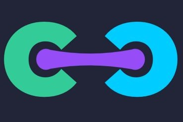

Project CasaOS / Crafty
Dit project dient voor het creëren van een Minecraft server. Door gebruik te maken van de debian cli waarop CasaOs draait. Op CasaOs draait de applicatie crafty die het aanmaken van minecraft severs zeer gemakkelijk maakt. Zo dat als je een minecraft server maakt dit gemakkelijk aan te maken is en te delen.
Uitleg
Hieronder zie je de uitleg over hoe het systeem werkt.
Debian
De os waar het project op draait is de Debian cli. Dit is een linux distro die geen grafische interface heeft. Dat is om er voor te zorgen dat deze os zo weinig mogelijk resources gebruikt. Om er voor te zorgen dat er zoveel mogelijk resources naar de minecraft servers kan gaan.
CasaOS
CasaOs is een web beheerapplicatie die op debian draait. Deze applicatie dient zo dat je van op een andere pc gemakkelijk kunt verbinden via een webapplicatie. Hier op kun je dan ook andere applicaties downloaden die op de server dan draaien.
Crafty
Crafty is de applicatie die er voor zorgt dat je makkelijk de minecraft server kunt maken en draaien. Dit geeft een overzichtelijk dashboard waarop je kan zien hoeveel server er draaien hoeveel mensen er online zijn en je kan ook heel gemakkelijk er plugins in slepen.
Guide
Hier onder zie je een stap voor stap uitleg om het te doen
Debian installeren
1. download balena etcher (klik hier)
2. klik flash from url
3. Gebruik deze url (klik hier)
4. Flash je usb
5. boot in de usb in de pc van keuze
6. Ga door de instalatie procedure
7. Klaar
CasaOS / installeren
1. Log in op je debian
2. Update debian / install curl:
sudo apt update && sudo apt install -y curl
3. install CasaOs:
curl -fsSL https://get.casaos.io | sudo bash
4. surf naar het ip dat je krijgt
5. maak een account
Crafty
1. Ga in de app store in CasaOs
2. Zoek crafty en download
3. Klik op de app (er opent een nieuwe browser)
4. Log daar op in (default = admin) passwoord staat in config